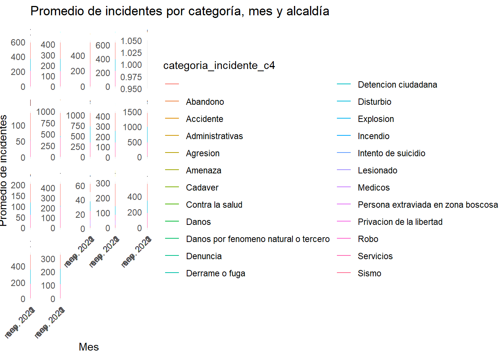
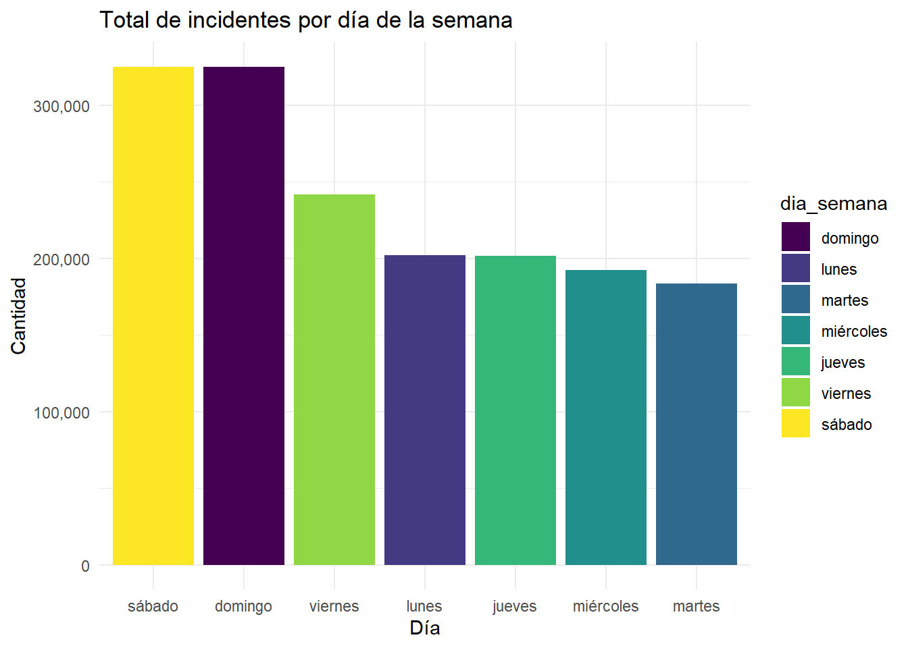
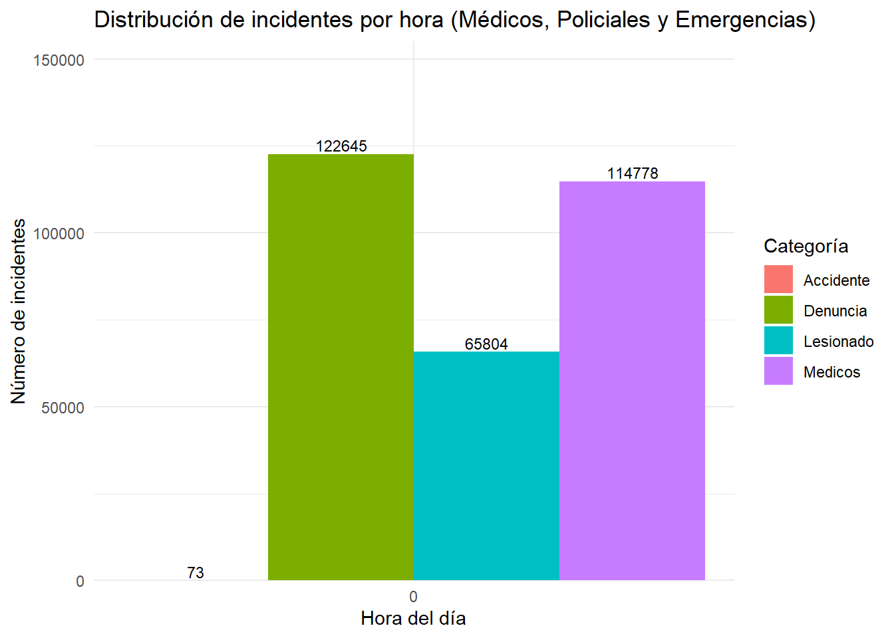
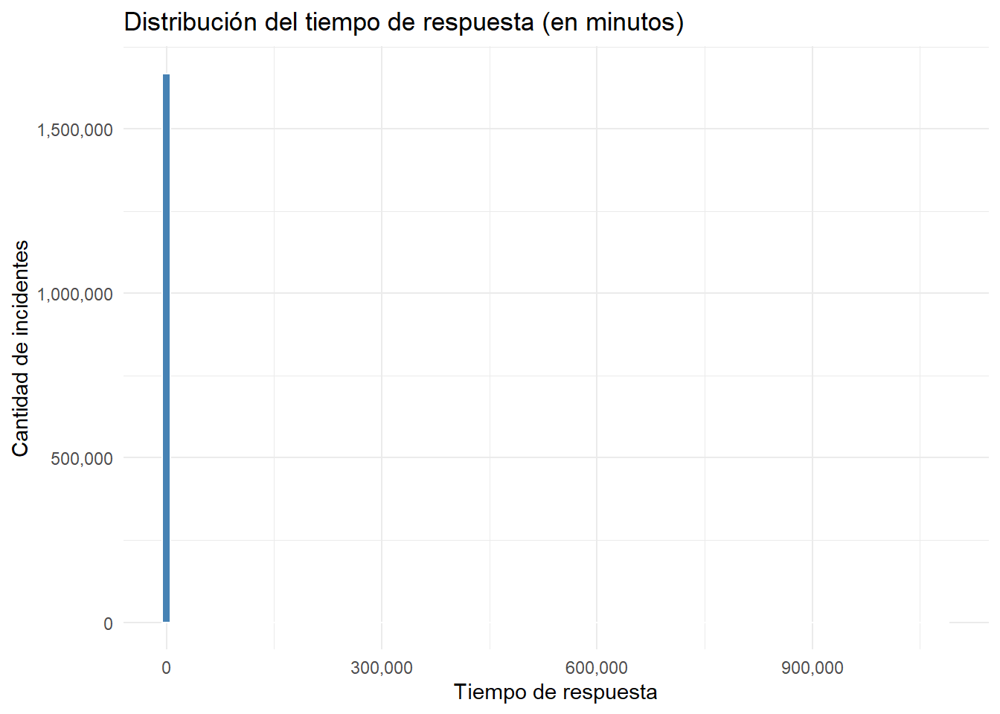
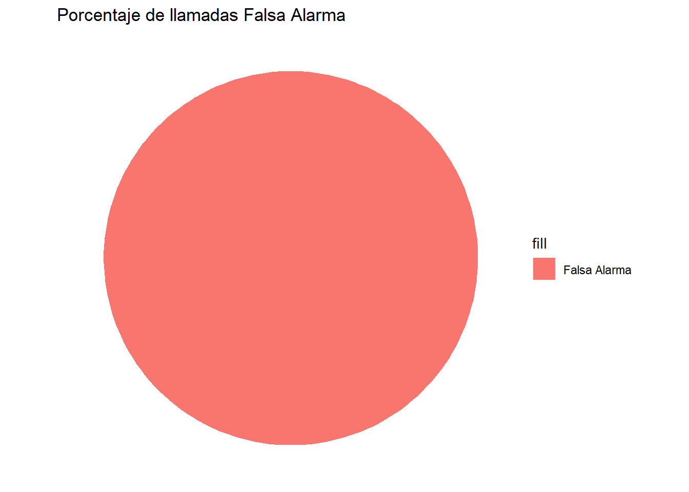

data_2021_1<-read.csv("llamadas_911_2021_s1.csv")
data_2021_2<-read.csv("llamadas_911_2021_s2.csv")
data_2022_1<-read.csv("llamadas_911_2022_s1.csv")
llamadas <- bind_rows(data_2021_1, data_2021_2, data_2022_1)
llamadas <- llamadas %>%
mutate(
fecha_creacion = as.POSIXct(fecha_creacion),
fecha_cierre = as.POSIXct(fecha_cierre),
mes = as.Date(floor_date(fecha_creacion, "month")),
dia_semana = wday(fecha_creacion, label = TRUE, abbr = FALSE),
hora = hour(fecha_creacion),
tiempo_respuesta = as.numeric(difftime(fecha_cierre, fecha_creacion, units = "mins"))
)
# Filtrar datos válidos
llamadas <- llamadas %>%
filter(!is.na(fecha_creacion), !is.na(fecha_cierre), tiempo_respuesta >= 0)
# Detectar nombre de columna de alcaldía
nombre_alcaldia <- names(llamadas)[str_detect(names(llamadas), regex("alcald|delegacion|colonia", ignore_case = TRUE))][1]
if (is.na(nombre_alcaldia)) {
stop("No se encontró columna de alcaldía compatible (alcald, delegacion o colonia)")
}
# Validar que existe la columna de categoría
if (!"categoria_incidente_c4" %in% names(llamadas)) {
stop("No se encontró la columna 'categoria_incidente_c4'")
}grafico1_data <- llamadas %>%
group_by(mes, .data[[nombre_alcaldia]], categoria_incidente_c4) %>%
summarise(promedio_incidentes = n() / n_distinct(dia_semana), .groups = "drop")
grafico1 <- ggplot(grafico1_data, aes(x = mes, y = promedio_incidentes, color = categoria_incidente_c4)) +
geom_line() +
facet_wrap(~.data[[nombre_alcaldia]], scales = "free_y") +
labs(
title = "Promedio de incidentes por categoría, mes y alcaldía",
x = "Mes", y = "Promedio de incidentes"
) +
scale_x_date(date_breaks = "4 months", date_labels = "%b %Y") +
theme_minimal() +
theme(axis.text.x = element_text(angle = 45, hjust = 1))
print(grafico1_data)## # A tibble: 5,059 × 4
## mes alcaldia_cierre categoria_incidente_c4 promedio_incidentes
## <date> <chr> <chr> <dbl>
## 1 2020-03-01 CUAUHTEMOC Servicios 1
## 2 2020-03-01 IZTAPALAPA Denuncia 1
## 3 2020-04-01 ALVARO OBREGON Denuncia 1
## 4 2020-04-01 ALVARO OBREGON Servicios 1
## 5 2020-04-01 BENITO JUAREZ Denuncia 1
## 6 2020-04-01 CUAJIMALPA DE MORELOS Denuncia 1
## 7 2020-04-01 CUAUHTEMOC Denuncia 1
## 8 2020-04-01 CUAUHTEMOC Servicios 1
## 9 2020-04-01 IZTACALCO Servicios 1
## 10 2020-04-01 IZTAPALAPA Denuncia 1
## # ℹ 5,049 more rows
ggsave("grafico1_promedio_incidentes.png", grafico1, width = 12, height = 8)
# --- Gráfico 2: Total de incidentes por día de la semana ---
dia_mas_incidentes <- llamadas %>%
group_by(dia_semana) %>%
summarise(total = n()) %>%
arrange(desc(total))
print(dia_mas_incidentes)## # A tibble: 7 × 2
## dia_semana total
## <ord> <int>
## 1 sábado 325184
## 2 domingo 324927
## 3 viernes 241517
## 4 lunes 202136
## 5 jueves 201600
## 6 miércoles 192211
## 7 martes 183461grafico2 <- ggplot(dia_mas_incidentes, aes(x = reorder(dia_semana, -total), y = total, fill = dia_semana)) +
geom_col() +
scale_y_continuous(labels = comma) +
labs(title = "Total de incidentes por día de la semana", x = "Día", y = "Cantidad") +
theme_minimal()
print(grafico2)
ggsave("grafico2_dia_semana.png", grafico2, width = 8, height = 6)
# --- Gráfico 3: Distribución por hora para categorías clave ---
palabras_clave <- c("medic", "lesion", "urgenc", "denunc", "delit", "enfermed", "acciden", "emerg")
categorias_detectadas <- unique(llamadas$categoria_incidente_c4)
categorias_filtro <- categorias_detectadas[str_detect(tolower(categorias_detectadas), paste(palabras_clave, collapse = "|"))]
if (length(categorias_filtro) == 0) {
stop("No se encontraron categorías médicas, policiales o de emergencia.")
}
llamadas_filtradas <- llamadas %>%
filter(categoria_incidente_c4 %in% categorias_filtro) %>%
filter(!is.na(tiempo_respuesta), tiempo_respuesta >= 0, tiempo_respuesta < 1000)
conteos <- llamadas_filtradas %>%
group_by(hora, categoria_incidente_c4) %>%
summarise(cantidad = n(), .groups = "drop")
max_cantidad <- max(conteos$cantidad)
grafico3 <- ggplot(conteos, aes(x = hora, y = cantidad, fill = categoria_incidente_c4)) +
geom_col(position = position_dodge(width = 0.9)) +
geom_text(aes(label = cantidad),
position = position_dodge(width = 0.9),
vjust = -0.25, size = 3, check_overlap = TRUE) +
scale_y_continuous(expand = expansion(mult = c(0, 0.1)), limits = c(0, max_cantidad * 1.15)) +
scale_x_continuous(breaks = 0:23) +
labs(
title = "Distribución de incidentes por hora (Médicos, Policiales y Emergencias)",
x = "Hora del día",
y = "Número de incidentes",
fill = "Categoría"
) +
theme_minimal()
print(grafico3)
ggsave("grafico3_distribucion_hora.png", grafico3, width = 12, height = 6)
# --- Gráfico 4: Tiempo de respuesta (histograma) ---
resumen_tiempo <- llamadas %>%
summarise(
promedio = mean(tiempo_respuesta),
minimo = min(tiempo_respuesta),
maximo = max(tiempo_respuesta)
)
print(resumen_tiempo)## promedio minimo maximo
## 1 199.0949 0 1085700grafico4 <- ggplot(llamadas, aes(x = tiempo_respuesta)) +
geom_histogram(bins = 100, fill = "steelblue", color = "white") +
scale_x_continuous(labels = scales::comma) + # eje X sin notación científica
scale_y_continuous(labels = scales::comma) + # eje Y sin notación científica
labs(
title = "Distribución del tiempo de respuesta (en minutos)",
x = "Tiempo de respuesta",
y = "Cantidad de incidentes"
) +
theme_minimal()
# Mostrar el gráfico
print(grafico4)
# Guardar el gráfico
ggsave("grafico4_tiempo_respuesta.png", grafico4, width = 10, height = 6)
# --- Gráfico 5: Porcentaje de llamadas Falsa Alarma (si existe la columna) ---
if ("clas_con_f_alarma" %in% names(llamadas)) {
porcentaje_falsa_alarma <- llamadas %>%
mutate(falsa_alarma = str_detect(clas_con_f_alarma, regex("Falsa", ignore_case = TRUE))) %>%
summarise(
total = n(),
falsas = sum(falsa_alarma, na.rm = TRUE),
porcentaje = 100 * falsas / total
)
print(porcentaje_falsa_alarma)
grafico5 <- ggplot(porcentaje_falsa_alarma, aes(x = "", y = porcentaje, fill = "Falsa Alarma")) +
geom_bar(stat = "identity", width = 1) +
coord_polar("y") +
labs(title = "Porcentaje de llamadas Falsa Alarma") +
theme_void()
print(grafico5)
ggsave("grafico5_falsa_alarma.png", grafico5, width = 6, height = 6)
} else {
message("No se encontró la columna 'clas_con_f_alarma'. No se genera gráfico 5.")
}## total falsas porcentaje
## 1 1671036 504 0.03016093